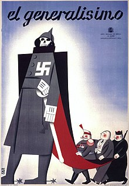
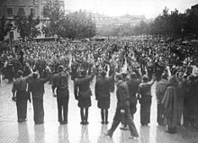

Introducción
La Guerra Civil Española fue un conflicto bélico que duró desde 1936 hasta 1939, fue una guerra —que más tarde repercutiría también en una crisis económica— que se desencadenó en España tras el fracaso parcial del golpe de Estado del 17 de julio de 1936, perpetrado por parte de las fuerzas armadas contra el Gobierno electo de la Segunda República. Tras el bloqueo del estrecho de Gibraltar y el posterior puente aéreo que, gracias a la rápida colaboración de la Alemania nazi y la Italia fascista, trasladó las tropas rebeldes desde el protectorado español de Marruecos a la España peninsular en las últimas semanas de julio, comenzó así una guerra civil que concluiría el 1 de abril de 1939 con el último parte de guerra firmado por Francisco Franco, quien declaró su victoria y estableció una dictadura que duraría hasta su muerte, en 1975.
documental de la guerraLa guerra tuvo múltiples facetas, pues incluyó lucha de clases, guerra de religión, enfrentamiento de nacionalismos opuestos, lucha entre dictadura militar y democracia republicana, entre contrarrevolución y revolución, entre fascismo y comunismo.
cartel propagandisticoA las partes del conflicto se las suele denominar bando republicano y bando sublevado:
bando republicano
También denominado «bando leal» o «bando gubernamental», estuvo constituido en torno al Gobierno, formado por el Frente Popular, el cual estaba compuesto por los republicanos de Izquierda Republicana y Unión Republicana, los socialistas del PSOE, los marxistas-leninistas con orientación estalinista del Partido Comunista de España, los marxistas-leninistas no estalinistas del POUM, el Partido Sindicalista de origen anarquista y en Cataluña los nacionalistas de izquierda encabezados por Esquerra Republicana de Catalunya. Era apoyado por el movimiento obrero, la FAI y los sindicatos UGT y CNT, los cuales también perseguían realizar la revolución social. También se había decantado por el bando republicano el Partido Nacionalista Vasco, debido a que las Cortes estaban a punto de aprobar el Estatuto de Autonomía para el País Vasco. 
bando sublevado
Se llamó a sí mismo «bando nacional», estuvo organizado en torno a parte del alto mando militar, institucionalizado inicialmente en la Junta de Defensa Nacional, la cual fue sustituida por la Junta Técnica del Estado tras el nombramiento de Francisco Franco como generalísimo y jefe del Gobierno del Estado. Políticamente, estuvo integrado por los fascistas de Falange Española de las JONS, los monárquicos carlistas de la Comunión Tradicionalista, los monárquicos alfonsinos de Renovación Española y gran parte de los votantes de la CEDA, la Liga Regionalista y otros grupos conservadores. Socialmente fue apoyado por aquellas clases a las que la victoria en las urnas del Frente Popular les hizo sentir que peligraba su posición; por la Iglesia católica, acosada por la persecución religiosa desatada por parte de la izquierda nada más estallar el conflicto y por pequeños propietarios temerosos de una revolución proletaria. En las regiones menos industrializadas o primordialmente agrícolas, los sublevados también fueron apoyados por numerosos campesinos y obreros de firmes convicciones religiosas. Ambos bandos cometieron graves crímenes en el frente y en las retaguardias, como sacas de presos, paseos, desapariciones de personas o tribunales extrajudiciales. La posterior dictadura de Franco investigó y condenó severamente los hechos delictivos cometidos en la zona republicana, llegando incluso a instruir una Causa General con escasas garantías procesales. Por su parte, los delitos de los vencedores nunca fueron investigados ni enjuiciados, a pesar de que algunos historiadores y juristas defienden que, además de subvertir el orden institucional, los sublevados habrían intentado exterminar a la oposición política.
Las consecuencias de la guerra civil han marcado en gran medida la historia posterior de España, por lo excepcionalmente dramáticas y duraderas: tanto las demográficas —mortandad y descenso de la natalidad que marcaron la pirámide de población durante generaciones— como las materiales —destrucción de las ciudades, de la estructura económica y del patrimonio artístico—, intelectuales —fin de la denominada Edad de Plata de las letras y ciencias— y políticas —la represión en la retaguardia de ambas zonas, mantenida por los vencedores con mayor o menor intensidad durante todo el franquismo, y el exilio republicano—, y que se perpetuaron mucho más allá de la prolongada posguerra, incluyendo la excepcionalidad geopolítica del mantenimiento del régimen de Franco hasta 1975.
VIDEO RESUMEN